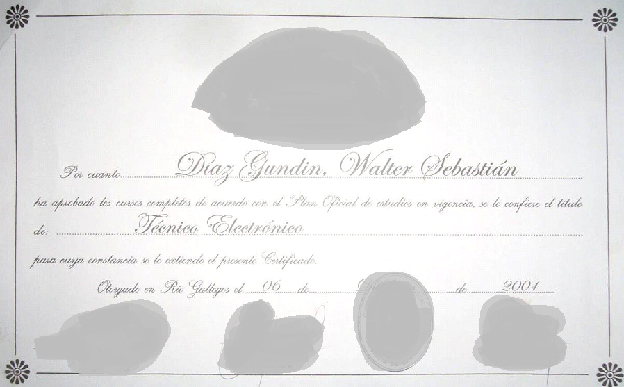

Walter Sebastían Diaz Gundin

Contacto
Presentación
A quien Corresponda:Mi experiencia laboral en el área informática cubre desde el armado de equipos hasta el soporte técnico tercerizado de Bancos y empresas, trabajando con empresas como Unisys Sudamericana/Dell, Ceitech, Ecos, realizando soporte técnico local de los bancos y sucursales atendidas por las mencionadas empresa,
algunas de estas son: Repsol YPF, Banco Patagonia, Banco Macro, HSBC Máxima /LBA Seguros, Banco Frances, Aerolíneas Argentinas Suc. El Calafate, Cerro Vanguardia, entre otras.
Quedando a su disposición y a la espera de una futura entrevista lo/a saludo muy atte.
- Estado civil: Soltero
- Nacionalidad: Argentino
- Edad: 35
- Lugar de nacimiento: Rio cuarto - Córdoba
- DNI: 12345678
- Domicilio Actual: Tres Lomas 1567 Rio Mediano – Santa Cruz
- C.U.I.L.: 23-12345678-2
Disponibilidad horaria full time,
Aprendizaje rápido,
Responsabilidad para con las tareas y la empresa en general,
Predisposición e iniciativa para la realización de tareas y solución de problemas,
Buena Conducta,
Buen trato con las personas,
Dispongo de carnet de conductor y vehículo propio.
- Escuela N° 1 Hernando de Magallanes Rio Gallegos - Santa Cruz Estudios Primarios Completos
- 1996 – 1998 Escuela industrial N°4 José Menéndez
- 1999 – 2001 Escuela Industrial N°6 X Brigada Aérea
- Conocimientos Adquiridos:
- Lectura e interpretación de diagramas de circuitos electrónicos.
- Diseño y montaje de circuitos.
- Programación y aplicación de micro controladores.
- Trabajo con PLC y lógicas de relés.
- Programación en turbo Pascal y PIC Basic.
- 2013 Marzo – 2013 Mayo Curso intensivo de programación de PIC
- Curso a distancia de 16 Clases – 32hs.
- Funciones básicas y programación de micro controladores PIC de 8-16 Bits
Ciclo Básico 1° a 3° Año
Finalización de estudios Secundarios con el Titulo de Técnico en Electrónica.
- conocimientos basicos
- programación en JAVA, PHP, Diseño WEB en DreamWeaver, Visual Basic .Net, C#, Bases de Datos SQL, MySQL y SQLite
- Julio 2018 -
Fontanella S.R.L. Rio Gallegos Santa Cruz
- Tareas Realizadas:
- Trabajo de mantenimiento y puesta en servicio de Cajeros automáticos
- Mantenimientos de Sistemas de alarmas.
- Instalación de antenas de radio enlaces para sistemas de alarmas
- Montajes de rack para servidores y comunicaciones de vos y datos.
- Mantenimiento y puesta en servicio de sistemas de CCTV.
- Montajes de redes de datos cableadas e inalámbricas.
- Configuración de Hardware de red en entidades bancarias
- Mantenimientos preventivos y correctivos en localidades del interior provincial de equipos ATM y sistemas de alarmas.
Técnico informático
- Febrero 2009 - junio 2018
Texur S.R.L. Rio Gallegos Santa Cruz
- Tareas Realizadas:
- Trabajo de mantenimiento y puesta en servicio de maquinas fotocopiadoras.
- Reparación de equipos informáticos.
- Planificación y montajes de rack para servidores y comunicaciones de vos y datos.
- Planificación y montajes de redes de datos cableadas e inalámbricas.
- Configuración de fotocopiadoras en red como impresoras y escáner de red.
- Reparación y manteamiento de impresoras
- Configuración de impresoras de red.
- Mantenimientos preventivos y correctivos en localidades del interior provincial de equipos de impresión y fotocopias.
- Abril 2008 - Agosto 2008
Wärtsilä Corporation, Planta de Energía en Cerro Vanguardia – Santa Cruz
- Tareas Realizadas:
- Trabajo de operación y mantenimiento de moto generadores a gas y Diesel.
- Instalaciones eléctricas.
- Conexionado de sensores y comunicación de los motores con el PLC.
- Tareas de limpieza y mantenimiento general.
- Confección de procedimientos para trabajos seguros y planos de modificación de conexionado de comunicación del PLC con los motores
Auxiliar Especialista
- Marzo 2007 –Diciembre 2007
PIU Electrónica Rio Gallegos – Santa Cruz
- Tareas Realizadas:
- Encargado Referente del local
- Administración
- Soporte a los Técnicos informáticos de Cosmos Video
- Servicio técnico a empresas en el área informática
- Planificación, Armador y configuración de redes (cableadas e inalámbricas) mantenimiento de sistemas informáticos de sucursales bancarias.
- Reparación y mantenimiento de consolas de Juego Play Station 1 y 2
- Armado de packs de baterías de NI-CD, NI-MH, LI-ION con Soldadora de punto para telefonía, radio comunicaciones, informática e instrumentos en general.
- Mantenimiento correctivo y preventivo ON SITE de las sucursales de: Supermercados Norte, Banco Patagonia, Repsol YPF, Banco Macro, Tarjeta Naranja, Restaurante RoCo/Alma Bless.
Encargado Comercial y Técnico
- Mayo 2006 – Marzo 2007
Servicio Técnico La Roca Rio Gallegos – Santa Cruz
- Tareas Realizadas:
- Administración y atención al Cliente del Servicio Técnico, carga de aire acondicionado de vehículos.
Encargado Administrativo (Emprendimiento Familiar)
- Octubre 2003 – Mayo 2006
Cosmos Video Rio Gallegos – Santa Cruz
- Tareas Realizadas:
- Armado, reparación de PC’s
- Configuración de Notebooks
- Armado e instalación Rack’s
- Instalación, configuración y mantenimiento de impresoras laser y de chorro de tinta
- Planificación, Armador y configuración de redes (cableadas e inalámbricas) mantenimiento de sistemas informáticos de sucursales bancarias.
- Cursos de mantenimiento de impresoras Laser monocromáticas HP y Laser color HP
- Cursos de montaje y mantenimiento de Servidores DELL
- Mantenimiento correctivo y preventivo ON SITE de las sucursales de: Supermercados Norte,
Banco Patagonia, Banco
Francés, Banco Macro, BNL,
Planta Repsol YPF, Aero planta Repsol YPF, HSBC Máxima y LBA La Buenos Aires Seguros. - Vehículo a cargo hasta el día de la venta del mismo ocupando me de parte de la venta.
Técnico informático
- Diciembre 2002 – Abril 2003
Master’s Informática Ushuaia - Tierra del Fuego.
- Tareas Realizadas:
- Servicio de tecnico de PCs, Armado y mantenimiento
Técnico Auxiliar
